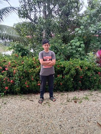

FAMILY
My Father
These are my parents. They have been married for 25 years and have 4 sons and a daughter. My father's name is Mohd Lokman bin Jusoh. My father is 50 years old. My father is from Pasir Mas, Kelantan. We live close to our grandparents 'house. He worked as a laborer and has supported my family with his work. My father was a quiet man but very friendly if anyone reprimanded him. He likes to spend time with his friends at the coffee shop. I call him by the nickname "Abah". My father's hobby is fishing. He would spend his time fishing after returning from work if he was still energetic. Our house is surrounded by paddy fields. Thus, he doesn't have to go fishing far away. He also loves birds. He is raising 4 birds outside of our house. A white dove and 3 spotted doves.
My Mother
This is my mother. My mother's name is Roselawati Binti Ab Rashid. She is 49 years old.
My mother is a year younger than my father. She is from Machang, Kelantan. I call her by the nickname "Umi".
My mother is a full-time housewife. Most of her time is spent cleaning the house and cooking.
I help her clean the house when I'm not busy. My mother was very fond of buying clothes and scarves.
I always teased her about her habit. But she still does it because she rarely buys the stuff.
My mother was a close friend of a tailor, so it was easy to get services from a tailor.
She is friendly and quick to get along with people around.
She used to be a sales assistant at a grocery store in the village, so many knew her and were friends with her.
My Eldest Brother
This is my eldest brother and his name is Mohd Afiq Akmal bin Mohd Lokman. He is 24 years old. He was born in 1997. My brother is currently undergoing a Kursus Program Latihan Asas Kepolisan (PLAK) Konstabel Pelatih. It was located at the police training center in Kuala Lumpur. My brother lived in my grandparent’s house because our house was quite cramped and lacked room. The distance from our house to our grandparents’ house is very close, so it doesn’t matter. My brother is an easy person to be friendly with people around. His character at home is very different when he is outside. When he was home, he was a fierce person but rather a spoiled person when with my mother. His character with me is very different. He likes to spend money with his friends. He was unskilled in managing expenses. Therefore, he was often teased by my mother. My brother only continued his studies at the SPM level. He was able to continue his studies at the STPM level, but due to certain problems, he had to stop. My brother also used to work in Kuala Lumpur at short times.
My Younger Brother
This is my younger brother Muhammad Aqil Akmal bin Mohd Lokman. He was born in 2002. Now he is 19 years old. He is pursuing his studies with a bachelor's degree. He continued his studies in the course of a bachelor’s degree in Defense Human Resource Management at Universiti Pertahanan Negara Malaysia (UPNM). He's a 1st-year student. He is also a cadet officer. He studied and worked full-time at the UPNM. He enjoyed participating in sports from elementary school to high school. He spent most of his time at school participating in sports like hockey, netball, and football. He has many certificates and medals in sports competitions, especially hockey. His character is a little similar to mine because he only talks when necessary if he is at home. But he has many friends and often goes out to the mall with his friends when he comes back home from the hostel. He is an independent person and does not depend on others. We used to work at the factory together in Selangor for over 2 months after we finished SPM and SPM respectively. He’s a rather a strict person with his youngest brothers.
My Younger Brother
This is my younger brother Mohamad Aidil Akmal bin Mohd Lokman. He was born in 2004 and now 17 years old. He was the fourth child. He was studying in high school in a special class because he had problems in learning. He’s a little slow in understanding things. He has a pink card as well as our youngest brother because of the same problem. But he is already good at reading even though it takes a long time from ordinary people. His character is very different from the other siblings. He easily rebels if his desires are not fulfilled. We had to be patient when we faced him because we understood the situation very well. He likes to hang out with his friends. He spends a lot of his time outside, especially during the paddy harvesting season. He will participate when workers start harvesting paddy using paddy machines. He will be on top of the machine and start recording his activities to be posted on social media such as Facebook and WhatsApp.
My Youngest Brother
 This is my youngest brother. His name is Muhammad Ariel Akmal bin Mohd Lokman. He was born in 2008 and now is 13 years old. He went to the same school as his brother, Aidil. He also enters special classes but in different classes. He's a very spoiled and talkative person. Sometimes we get tired of hearing him talk regardless of time and telling him to shut up. But it didn't stop him because he kept talking. He likes to go out early in the morning to meet his friends. They will spend their time playing badminton. He's a bit lazy and it is hard to tell him to do the job. Recently he was given a handphone as a deal for him to use to study because he has not yet been able to read. But the phone is used to watch Tiktok and Youtube. All the time, we could hear him laughing while watching funny things on social media. But we also threatened him to take the handphone if he was lazy to do homework. So, it's a win-win situation for both sides.